TSF2 - Le télésiège des Planeys
Les Gets et le versant du Mont Chéry
Les Gets est un village de Haute-Savoie installé au col du même nom, entre la vallée du Giffre et la Dranse de Morzine. Son nom vient du patois désignant un couloir de descente du bois, matériau resté central dans l'architecture des chalets du village. La station de ski naît en 1936 avec l'ouverture de son premier téléski, et s'adresse aujourd'hui encore à une clientèle attachée au patrimoine et aux paysages traditionnels de montagne. Reliée aux Portes du Soleil, elle partage son domaine avec Morzine, à l'exception du secteur du Mont Chéry.
Le télésiège des Planeys, mis en service en 1982, est légèrement excentré sur le domaine du Mont Chéry.
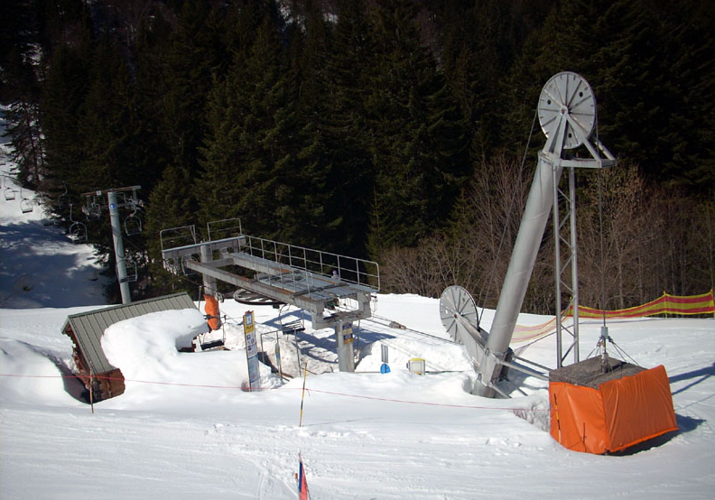
Histoire du secteur
Construit en 1982 par Montaz Mautino, le télésiège des Planeys se distingue par l'imposant contrepoids visible en gare aval, la partie motrice de l'appareil étant quant à elle installée en amont.
Localisation géographique
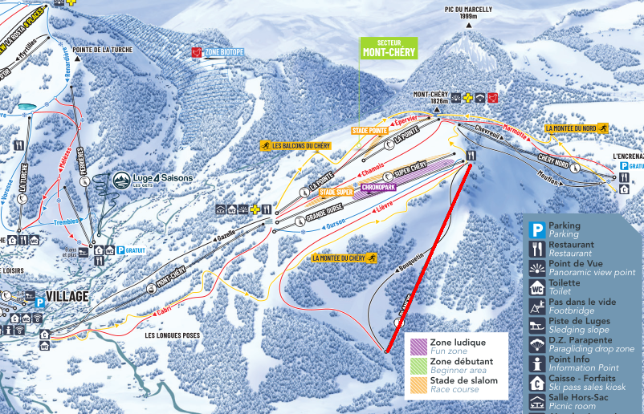
Situation
La ligne comporte plusieurs changements de pente marqués, avec notamment un passage particulièrement raide entre les pylônes 2 et 4. Côté ski, l'appareil dessert le stade de slalom, le snowpark, ainsi que trois pistes : Ourson, une piste bleue qui ramène à la gare aval du téléski de Super Chéry, Lièvre, une piste rouge qui redescend jusqu'à la gare aval de l'appareil, et Bouquetin, une piste noire réputée comme la plus difficile de la station, qui suit la ligne du télésiège. Cette dernière n'est pas toujours ouverte, en raison des risques d'avalanches selon les conditions de neige.
Ce secteur est très apprécié en haute saison, l'attente en gare aval y étant quasiment inexistante. Les paysages traversés valent le détour, avec une recommandation à en profiter plutôt le matin pour une meilleure qualité de neige.
Caractéristiques
Le télésiège des Planeys est un télésiège à attaches fixes 2 places, construit par Montaz Mautino et mis en service en 1982. Il fonctionne en saison hivernale, avec une capacité de 1200 personnes par heure à une vitesse d'exploitation de 2,3 m/s, pour un temps de trajet d'environ 7 minutes et 35 secondes.
La ligne développe 1047 mètres pour un dénivelé de 380 mètres, avec une pente moyenne de 39 % et une pente maximale de 96 %.
La montée s'effectue par la gauche. La gare motrice est installée en amont, tandis que la tension du câble est assurée en aval. La ligne compte 11 pylônes.
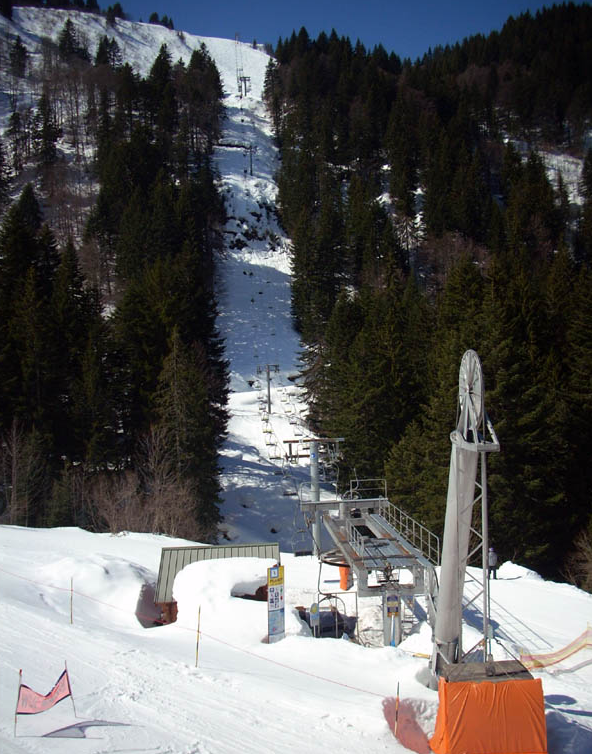

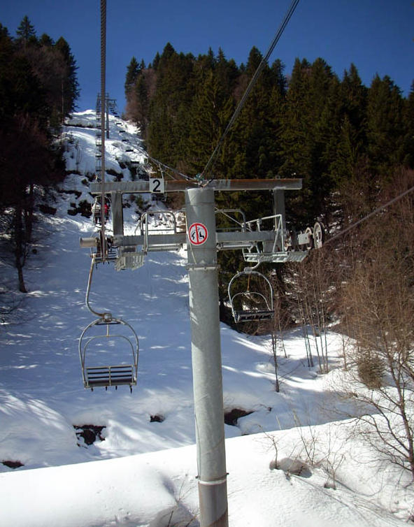
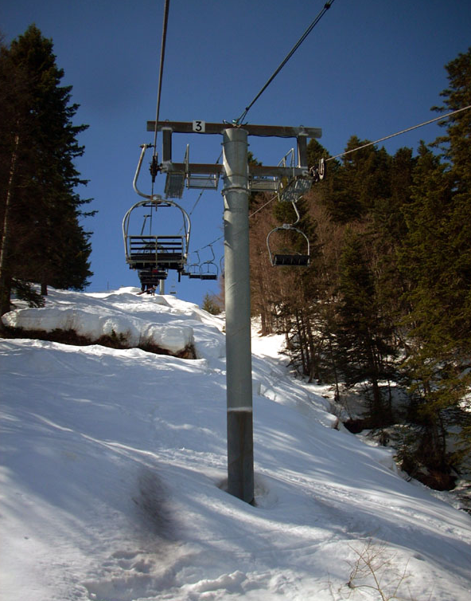
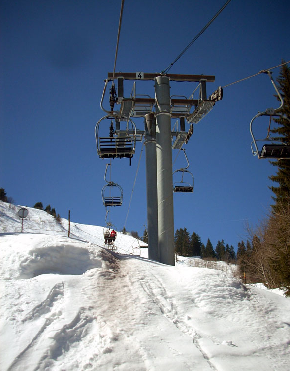
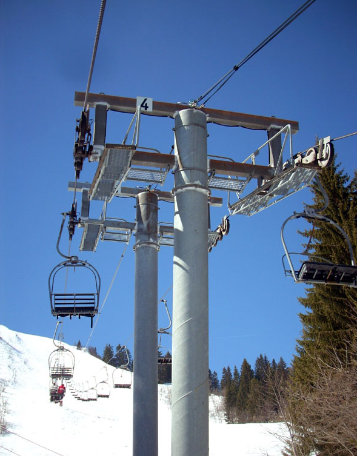
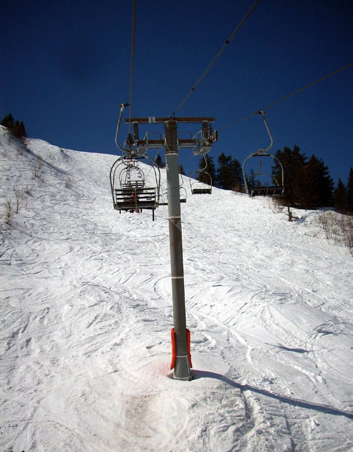
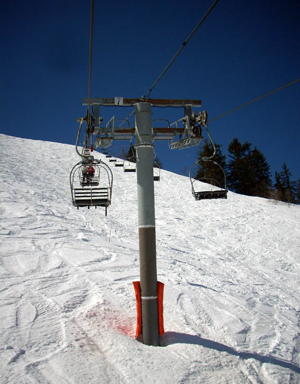
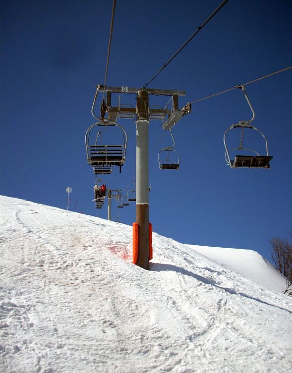
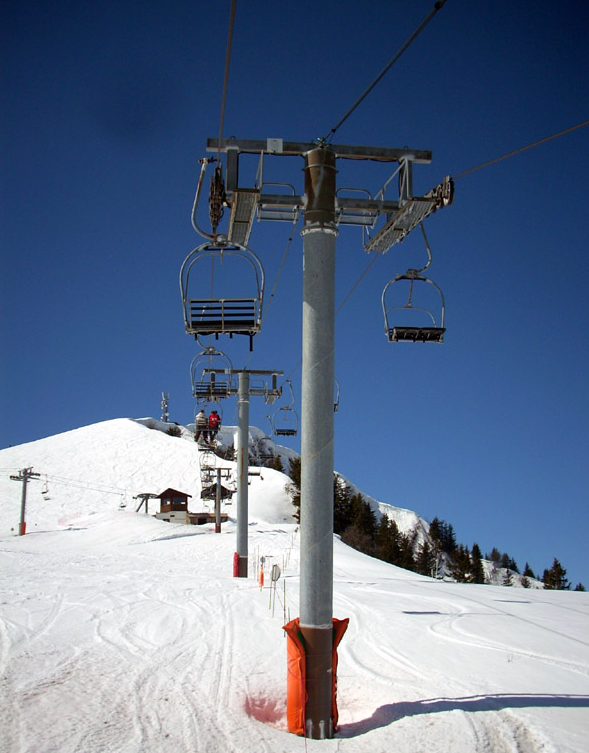
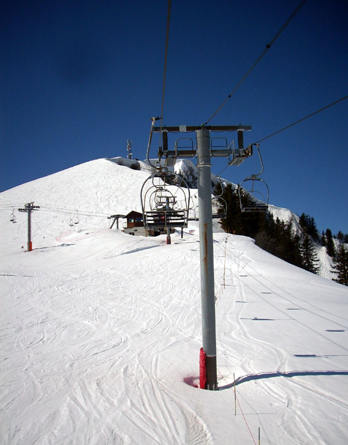
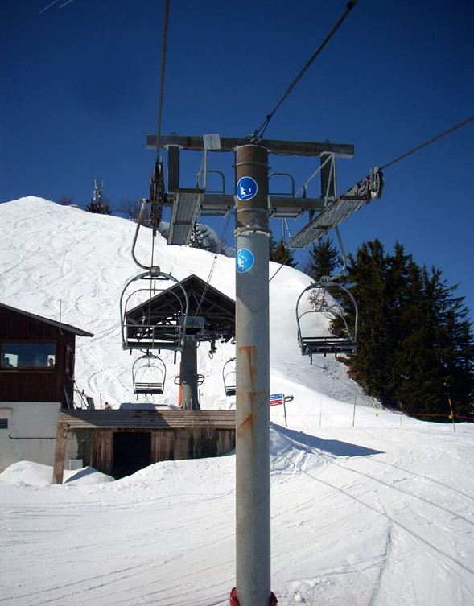
Gare amont
La gare amont du télésiège des Planeys abrite la motorisation de l'appareil, la partie motrice étant installée en amont contrairement à la majorité des télésièges fixes de la station.
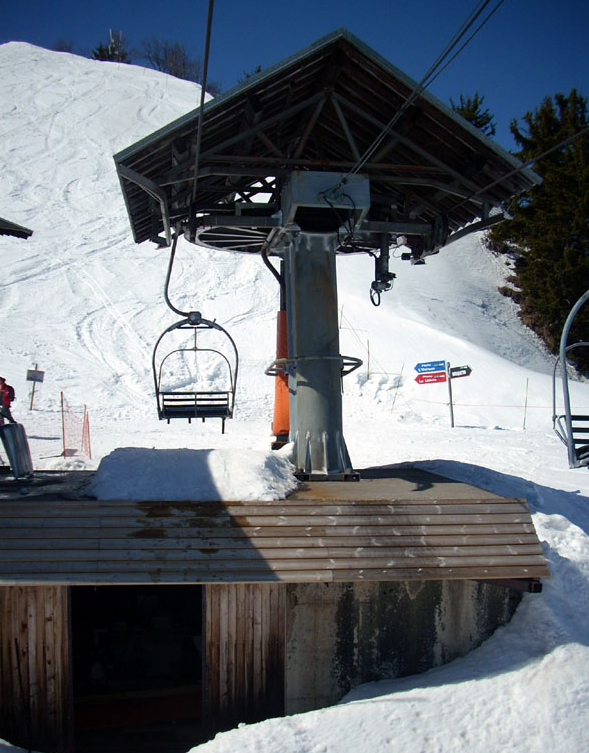
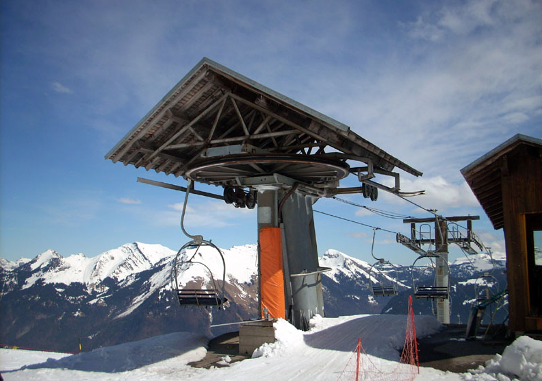
Vue depuis les pistes
Depuis les pistes du secteur, la ligne du télésiège des Planeys offre plusieurs points de vue sur son tracé et sur le paysage environnant du Mont Chéry.
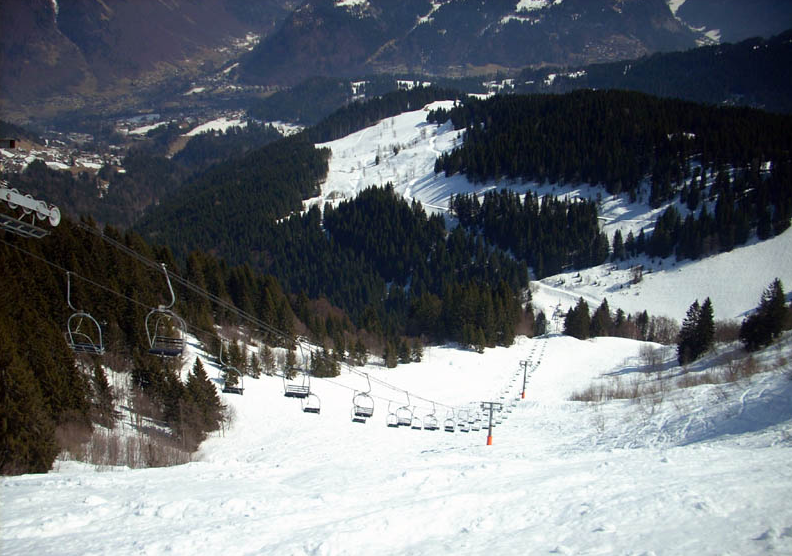
Conclusion
Construit par Montaz Mautino en 1982, le télésiège des Planeys reste un appareil apprécié pour son cadre préservé et sa faible fréquentation, offrant un accès à des pistes techniques et à de beaux panoramas sur le versant du Mont Chéry.